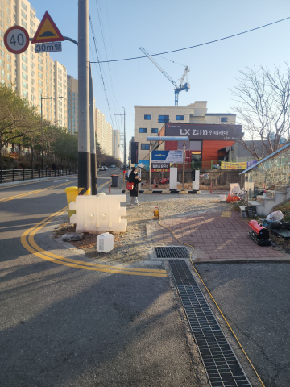

표지판 설치
표지판을 알아보기 쉬운 높이와 방향으로 설치합니다.


인천광역시 남동구 만수동 표지판설치 상담
주차·출입·안전 안내가 필요한 위치에 표지판을 설치합니다.

주차 안내와 안전 표지판은 벽부형이나 지주를 이용한 스탠드형으로 설치할 수 있습니다.지주형 표지판은 바닥에 앙카로 고정하거나 매립해 설치합니다. 잘 보이는 높이와 방향으로 맞춥니다.
표지판설치 시공 전·후 사진을 살펴보세요.
표지판을 알아보기 쉬운 높이와 방향으로 설치합니다.

어떤 작업을 하나요?
주차·진입·안전 안내를 벽면에 설치해 내용을 명확히 전달합니다.
표지판을 지주에 세워 설치합니다.
지주형 표지판은 바닥에 앙카로 고정하거나 매립하는 방식으로 시공합니다.
운전자와 보행자가 잘 볼 수 있으면서 통행에 방해되지 않는 높이와 방향으로 설치합니다.
설치·부분 교체 상담
현장 전체와 설치할 곳의 사진, 필요한 제품과 수량을 보내주세요. 설치부터 부분 교체까지 원하는 작업에 맞춰 상담해 드립니다.야간·주말 일정도 현장에 맞춰 상담합니다.
주차 안내와 안전 표지판은 벽부형 또는 지주형으로 설치하며 바닥에 따라 앙카식·매립식으로 고정합니다.
주차 안내, 진입금지, 보행자 주의 등 필요한 정보를 잘 보이는 위치에 설치합니다.
벽에 부착하는 표지판과 지주를 이용한 스탠드형을 현장 목적에 맞춰 설치합니다.
지주형 표지판은 바닥 상태와 설치 위치에 따라 앙카식 또는 매립식으로 시공합니다.
차량과 보행자가 표지 내용을 쉽게 읽을 수 있도록 높이와 방향을 정합니다.
같은 지역의 다른 작업
다른 시공항목도 함께 살펴보세요.인천광역시 남동구 만수동 시공 안내로 이동합니다.
 볼라드같은 지역 시공 안내 보기 →
볼라드같은 지역 시공 안내 보기 → 논슬립패드같은 지역 시공 안내 보기 →
논슬립패드같은 지역 시공 안내 보기 → 반사경같은 지역 시공 안내 보기 →
반사경같은 지역 시공 안내 보기 → 아스콘부분보수같은 지역 시공 안내 보기 →
아스콘부분보수같은 지역 시공 안내 보기 → 주차금지봉같은 지역 시공 안내 보기 →
주차금지봉같은 지역 시공 안내 보기 → 차량진입판같은 지역 시공 안내 보기 →
차량진입판같은 지역 시공 안내 보기 → 카스토퍼같은 지역 시공 안내 보기 →
카스토퍼같은 지역 시공 안내 보기 → 코너보호대같은 지역 시공 안내 보기 →
코너보호대같은 지역 시공 안내 보기 → 차선규제봉같은 지역 시공 안내 보기 →표지판설치현재 보고 계신 시공 안내
차선규제봉같은 지역 시공 안내 보기 →표지판설치현재 보고 계신 시공 안내다른 지역의 설치·교체 작업도 편하게 문의해 주세요.